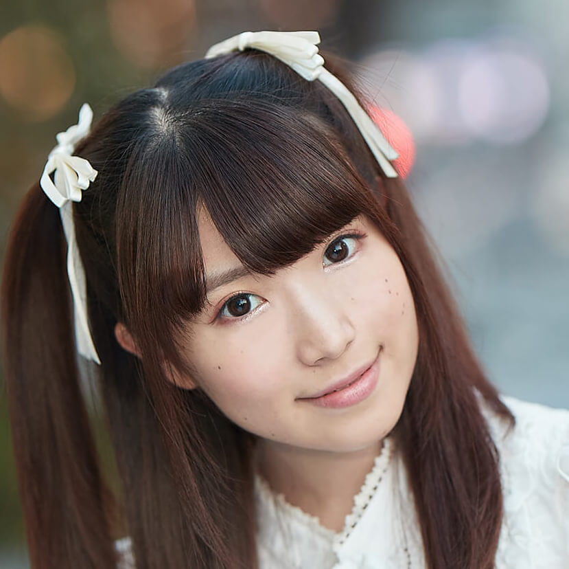

【声マガ・インタビュー】赤尾 ひかる
TOPICS
PROFILE
アイムエンタープライズに所属する赤尾 ひかるさんは、埼玉県出身で6月16日生まれ。2017年に『ソード・オラトリア ダンジョンに出会いを求めるのは間違っているのだろうか外伝』のルルネ・ルーイ役を務め、以降、『メルヘン・メドヘン』（ウピール・チカ役）、『HUGっと! プリキュア』（川上あや役）、『こみっくがーるず』（萌田薫子役）、『Back Steet Girls‐ゴクドルズ‐』（チカ役）、などに出演。そして2019年1月より放送される『えんどろ~！』の、ユーリア・シャルデット役に決定している。
ピアノとヴァイオリンを演奏し、大学時代はオーケストラ部に所属していたという音楽が大好きな赤尾 ひかるさん。そんな音楽を愛する赤尾さんに、声優をめざしたきっかけと日本ナレーション演技研究所（以下、日ナレ）で学んだことや、今後の目標についてお話をしていただきました。
自分が心の底から夢中で取り組めるもの、それが声優
{kind=link}
声優という仕事を意識したのはいつ頃ですか？
小学6年生から中学生の頃にアニメにとてもはまったんです。中でも『NARUTO-ナルト-』が大好きで、中学2年生の時にキャラクターについてネットなどでいろいろ調べていたら、そのキャラクターに声をあてる専門の人が存在するということを知りました。ひとつのキャラクターと作品だけではなくて、いろんな作品に違う役で数多く出演していたり、キャラソンをその役柄として歌っていることにも気がつくようになったのが、この職業を意識したきっかけでした。
その時点では声優になりたいと思っていたんですか？
楽しそうなお仕事だな、とは思いましたが、中学生の時点では憧れはあっても積極的に声優になりたいという気持ちは、まだあまりなかったように思います。
ではなぜそんな赤尾さんが日ナレに？
私は中学・高校で、放送部に所属していたのですが、この放送部が自分たちで創作ラジオを制作したり、NHKの放送コンテストにも頻繁に参加するような、とても熱心な部活だったんです。日ナレに通うきっかけは、もっと朗読がうまくなりたい、どうしたらうまくなれるんだろう、という気持ちからでした。それと高校の時に、自分の将来の進路を真剣に考え始めたことも大きかったと思います。私は高1から理数科だったんですが、周囲の友達はお医者さんになりたいとか、薬剤師さんになりたいなど、目標がとても明確だったんです。私も確かに宇宙関係の勉強をしたいと思ってはいたのですが、本当に心の底から宇宙に関する学問を極めたいかと自問自答したら何か違うな、と思うようになっていました。いったい自分が一番夢中になれることってなんだろう、と考えた時に、声優になりたいという気持ちが心の中に芽生え始めたんです。私はそもそも子どもの頃から表現することがとても好きで、アニメも大好きだったので、声優なら心の底から夢中になって頑張れるかもしれない、と思えるようになってきたんです。それで先生にそのことを相談すると「どっちつかずの中途半端はダメ」と言われて声優を具体的に志すようになりました。それで、高校２年生の夏から日ナレに通うようになったんです。
{kind=link}
ところでなぜ日ナレを選ばれたのですか？
通いやすさです。週1回なら授業やクラブ活動にも支障がないだろうと思いました。また通いやすい場所に、日ナレがあったのも決め手だったと思います。
入所当初の生活サイクルを教えていただけますか？
日ナレには1週間に1回、日曜日に通っていました。部活動もしっかりできましたし、学校の授業にも何も支障はありませんでした。レッスンを休んだ記憶はほとんどありません。大学に入ってからもオーケストラ部に所属していたのですが、部活にも日ナレのレッスンにもしっかり打ち込むことができました。
入所した頃の日ナレの印象はいかがでしたか？
とても活気に満ちていました。私は7月生としての入所だったのですが、クラスメイトの意気込みの強さを感じると同時に、みんなにとっては、明らかに習い事の延長とは違うんだ、と実感しました。特に7月入所の受講生は、1月の進級審査まで4月生よりレッスンの期間が短い分、皆さんとてもモチベーションが高かったように感じました。
同時期に入所した受講生の人たちとの交流から学ぶことはありましたか？
はい。クラスの中には社会人の方もいましたし、私のような学生の人など様々な世代や立場の人もいました。受講生がグループに分かれて作品を発表する課題の際にみんなで打ち合わせをしたり、いろいろな話をしていく過程で、自分とは違う学ぶ姿勢や、考え方を知ることができました。
入所二年目でぶちあたった感情表現の壁
{kind=link}
実際のレッスンは楽しかったですか？
基礎科の1年目はとても楽しかったです。発声や滑舌は放送部時代に学んでいたこともあってか、あまり戸惑いもなかったですし、エチュードをいきなりやっても緊張した記憶はありません。でも演技に関しては、自分がそれまで演技だと思っていたものと、講師の方から教えていただくものとのギャップがとてもありました。だから2年目以降、特に表現力や創造力を高めるレッスンは結構辛かった記憶があります。
具体的には？
講師の方にレッスンの度に、何をやっても「テンションを上げて」とダメ出しをされました。自分の中では感情を思い切り込めてテンションを上げて演じているつもりだったのですが。今思えば声優なのだから、感情をあくまでリズムと音できちんと伝えないとダメだ、ということを教えてくださっていたのだと思うんです。でも当時はそれがわかりませんでした。
それで、何か解決策は見つかったんですか？
全然。もうどうしていいかわからず、必死でその講師の方の話す余談すらもノートにメモするようにしていました（笑）。
そんな時はどうやって落ち込んだ気持ちを和らげていたんですか？
ちょっと高いジュースを買って、自分で自分を励ましていました。「今日はダメだったけど、今度は大丈夫」と言い聞かせながら、ジュースを飲んでいました（笑）。
{kind=link}
自分で自分を信じることはとても大切ですよね。お話を伺ったかぎりですが、日ナレの講師の方々は皆さん、かなり厳しいということで宜しいでしょうか（笑）。
いえいえ（笑）。当時は確かに辛かったんですが、講師の方々にはとても大切なことをたくさん教えていただいたと思います。感情の出し方について言えば、人それぞれの表現を尊重しつつも、それとはまた違う角度から、より深い表現が出来るようにと教えてくださいました。また長いスパンで声優という仕事を続けていけるように、「今だけを見ないで、先のことを考えていきなさい」と常に教えてくださいました。私も目先のことに集中してしまいがちなので、そんな時、講師の方からいただいた言葉は今も大きな財産になっています。
この声で、私にしかできない表現を追求したい
{kind=link}
では成長を実感できたことや嬉しかったことはありますか？
大学1年生の時に現在の事務所に所属できたことはとても大きかったです。当時私は研修科1年目だったんですが、スランプというか成長が実感できない時期がまだ続いていて、もしこのままの状態が続くようなら日ナレに通うのを今年で最後にしようと思っていました。そんな矢先に現在所属しているアイムエンタープライズに受かったことは大きな自信につながりましたし、なにより嬉しかったのは母がとても喜んでくれたことです。それと、これはレッスンの時のエピソードになるのですが、ボイスサンプルを作成した時に、みんなから「わたしらしさが出ている」と言ってもらえたのも嬉しかったです。それって私にしかできない表現ができている、ということだと思うので。
デビュー作を教えてください。
名前のある役で出演した作品をデビューとするなら、2017年の『ソード・オラトリア ダンジョンに出会いを求めるのは間違っているのだろうか外伝』（ルルネ・ルーイ役）になると思うのですが、自分では落ち着いて演じることができたと思っています。
お話を聞いているかぎりですが、緊張はあまりしない方では？
はい、比較的。でも逆にそのせいでやりすぎちゃう時があるんですよ。はっちゃける場面ではそれでいいと思うのですが、落ち着いた場面や静かな場面では抑え目でも気持ちがしっかり伝わるように、感情をコントロールしていくことが今の私の課題だと思っています。
ところで話は変わりますが、ご自身の声を録音したものを、初めて聞いた時はどう思いましたか？
最悪でしたよ（笑）。その時はかなり焦りながら、留守電に母宛てのメッセージを入れたつもりなんですが、あとでその音声を聞いたらこれがちっとも大切なことを伝えようとしているように聞こえなくて（笑）。なんというか…。
思っていた以上に軽かった（笑）？
え、こんなふざけた声だったの？って（笑）。でも今は自分が生まれもったこの声で、たくさんの人を感動させることが出来るなんてとっても素敵だなと思っています。
{kind=link}
今ちょっとお話に出ましたが、赤尾さんの考える声優というお仕事の魅力についてもう少し聞かせていただけますか？
デビュー前はいろんなキャラクターになれることが、このお仕事の魅力だと思っていました。でもお仕事をするようになってからは、自分にしかできない表現やキャラクターを作り上げていくことに魅力を感じています。誰かにどれだけ似せたとしても、それはどれだけ上手に演じてみても結局はモノマネなんですよね。それよりは自分だけの感性と自分だけの表現で作り上げたキャラクターを演じて、その結果、ファンの方に喜んでもらえたり、感動してもらえた時はこのお仕事をしていて本当に良かった、と思えます。
今後の目標と、どんな声優になりたいか教えていただけますでしょうか？
観る人に深く考えさせるようなシリアスな作品や、激しいハードな作品にもチャレンジしていきたいと思っています。そして一つひとつ作品に愛を注いで、現場では皆さんと仲良く、かつ楽しい雰囲気を作れるように今まで以上に励んでいきたいと思います。そのうえで、老若男女問わず見てくださった方から愛されるような、そんな声優をめざしたいです。
最後に声優をめざしている方にメッセージをお願いします。
やらなきゃという気持ちが強すぎると、どうしてもお仕事を楽しむ余裕がなくなってしまうと思うんです。以前の私がそうでした。でも、ある作品との出会いで考え方が変わりました。その作品はディレクターさんが女性の方だったんですが、まるで家族のようになんでも話し合える雰囲気を常に作ってくださったんです。そのお陰で行き詰ることなく、とても楽しくお仕事をすることができました。目標に向かって頑張ることはとても大切だと思います。でも無理をしないで、自分にできることをしっかり楽しんでやることが、それ以上に大切だとその時から思うようになったんです。だから何事にも楽しく！それが私から皆さんへのメッセージです。
プロフィール
赤尾 ひかる
- 所属事務所
- アイムエンタープライズ
主な出演歴
- ＴＶアニメ『えんどろ～！』（ユーシャ)
- 『BackStreet Girls -ゴクドルズ-』（チカ)
- 『こみっくがーるず』（萌田薫子)
